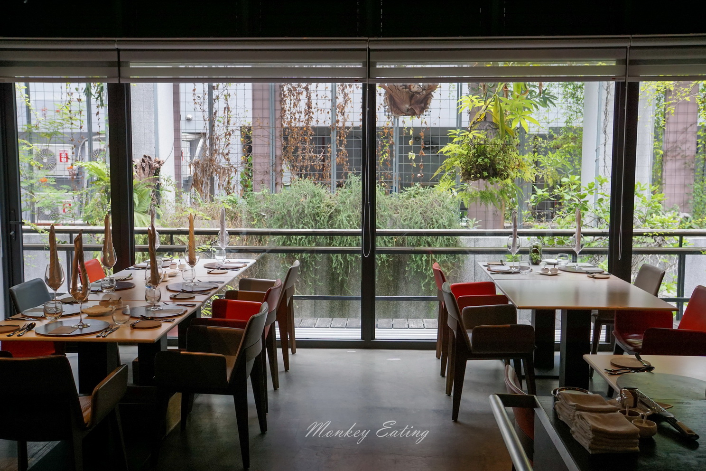

Forchetta

我是一位非常喜愛品嚐美食的人，相信許多人挑選餐廳時，總會參考米其林指南，我也不例外。因此，想就米其林來做一個深入的了解。米其林指是法國知名輪胎製造商米其林公司所出版的美食及旅遊指南書籍的總稱，其中以評鑑餐廳及旅館最為出名，同時也被稱為「紅色指南」。
對我來說，在走進米其林餐廳前，或是得知將要前往的餐廳曾獲得米其林肯定時，便會抱持著極大的期待，但與此同時，我發現自己其實不懂米其林的評分方式及星星意義，究竟是怎麼一回事？什麼樣的餐廳能獲米其林肯定？一星二星三星是什麼？